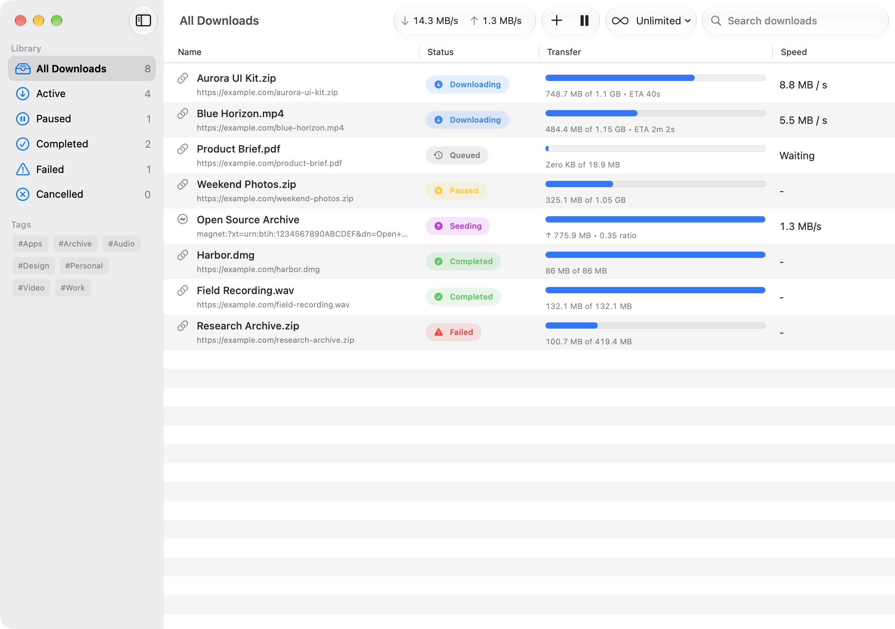
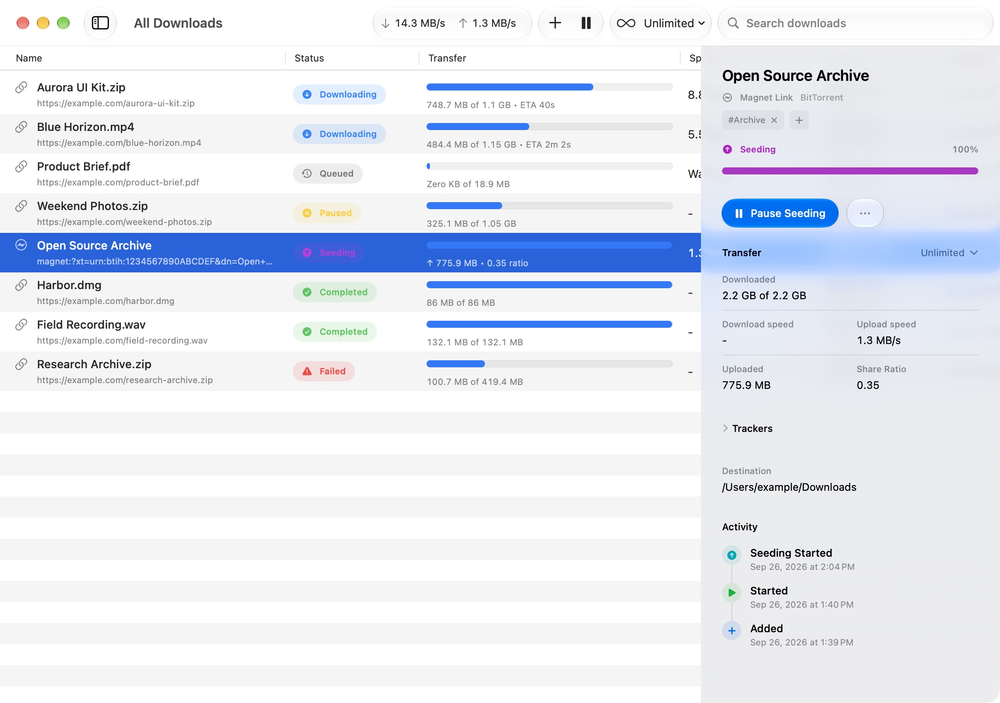
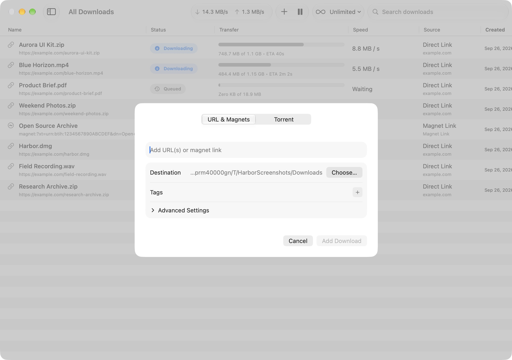
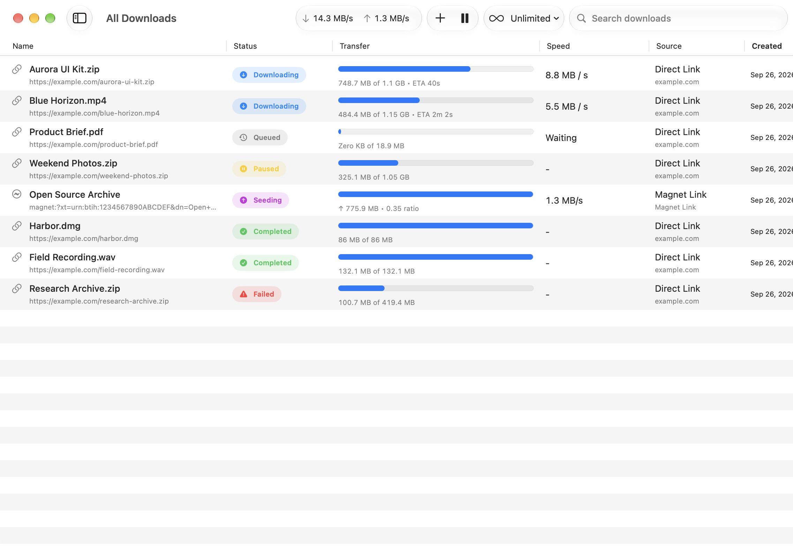
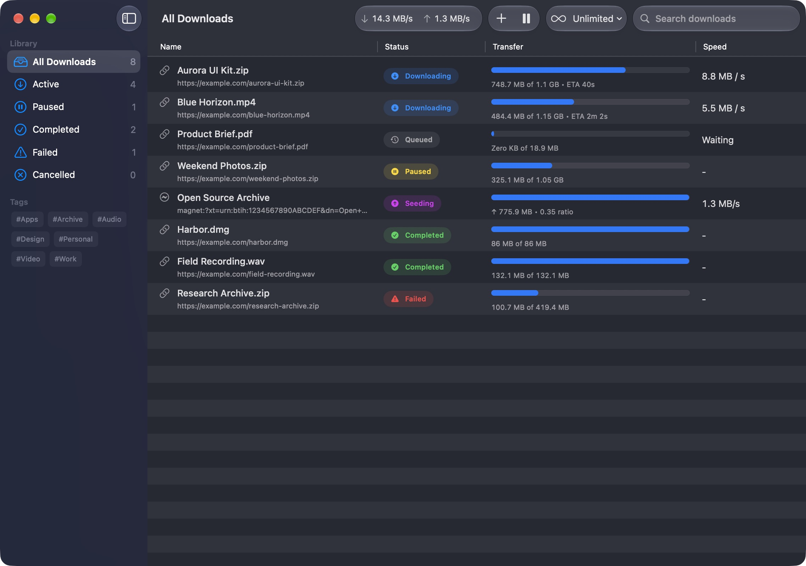
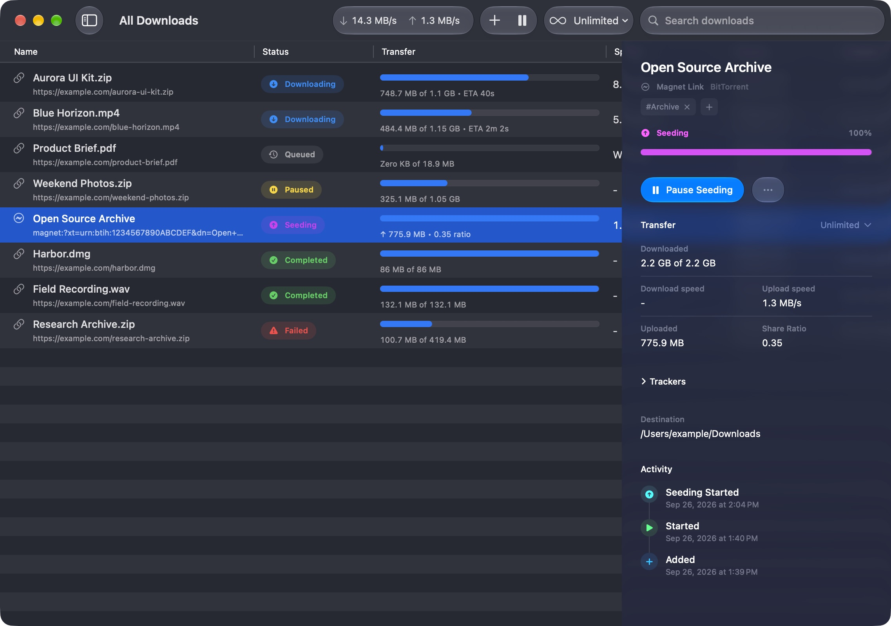
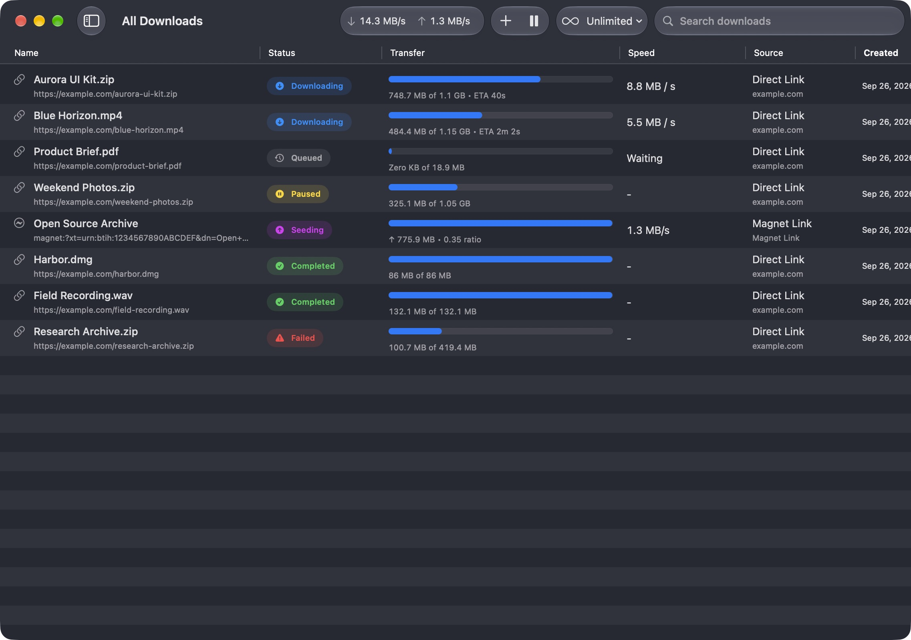

Torrents and magnets
Open torrent files or paste magnet links and manage them in one queue.
Download torrents and public media links on macOS.
A free, open-source Mac downloader for torrents, magnet links, YouTube, Instagram, TikTok, Pinterest, and other supported public URLs.







All downloads · Light appearance
Everything you need to manage torrents, public media, and active transfers on your Mac.
Open torrent files or paste magnet links and manage them in one queue.
Download videos and audio from public URLs supported by yt-dlp.
Preview torrent contents and download only the files you need.
Switch between Unlimited, Balanced, Quiet, and Custom traffic modes.
Override the traffic mode and speed limits for a single download.
Paste multiple links and add the supported downloads in one step.
Automatically add torrent files placed in a folder you choose.
Review status changes and key events for each download.
Set request headers, connection counts, destinations, and seeding rules.
Start Harbor at login and keep your Mac awake during active downloads.
Bind torrent traffic to a selected service or network interface.
Organize downloads with tags, then filter and search by tag.
Route direct and torrent downloads through system or manual proxies.
Manage trackers, reannounce, and use an IP blocklist.
The next improvements are shaped by Harbor’s open roadmap and community requests.
Send links to Harbor from Safari, Chrome, and other Chromium browsers.
Detect supported links on your clipboard and ask before adding them.
Route new downloads to folders by tag or file type.
Schedule start times, reorder queued work, and add media without waiting.
Set the incoming port used by torrent peers.
Check expected hashes and verify existing torrent data before transfer.
See transfer progress and use quick actions from the menu bar.
Explore torrent search, Usenet, Debrid services, and one-click hosters.
Choose subtitle languages and save captions alongside supported media.
Change download names and their files while work is still in progress.
Add downloads, inspect the queue, and control Harbor from local automation.